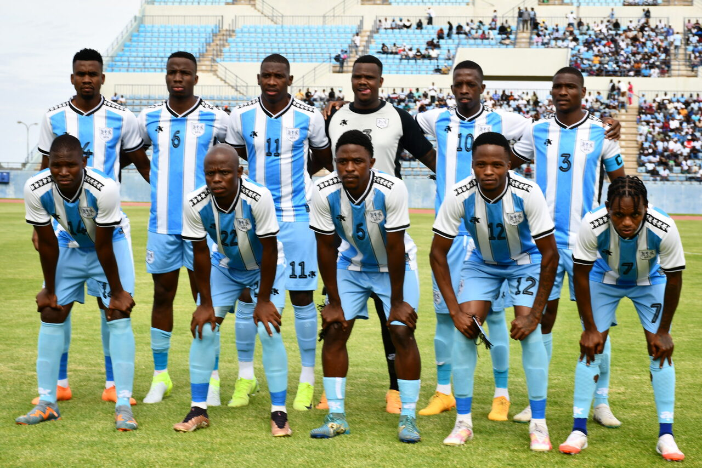

The Zebras - Botswana National Football Team
The Botswana national football team, the Zebras, is one of the African national teams that command a huge following, yet it has never won or qualified for the world cup or African nations cup. Botswana surprised many by topping their qualifying group and securing their first AFCON berth. They demonstrated a strong defensive record, conceding only three goals in eight matches. The Zebras are currently under the guidance of Morena Ramoreboli, who was recently appointed as the permanent head coach. He led the team to the AFCON 2025 qualification during his interim role.
